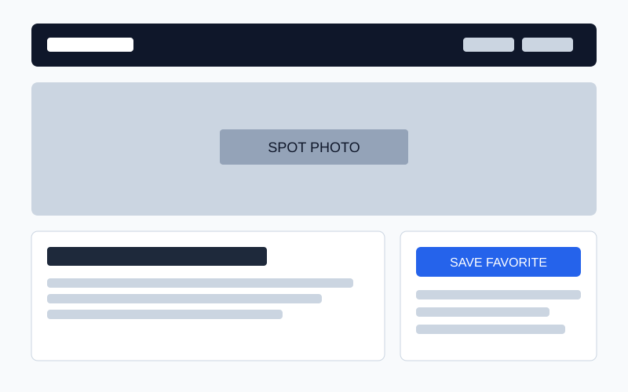

Purpose & Audience
Purpose: Help students find study spaces by noise level, outlet access, and crowd comfort; save favorites; and log quick check-ins.
Audience: College students and remote learners looking for reliable places to focus.
Logo
The logo combines an open book with a location pin to represent finding productive places to study.
Colors & Fonts
Primary Dark Blue: #0F172A - headers, footer, and primary text areas.
Primary Blue: #2563EB - links, buttons, and active controls.
Accent Gold: #F59E0B - favorites and small highlights.
Light Background: #F8FAFC - page background.
Body Text: #1E293B - readable slate for normal content.
Fonts: system-ui, sans-serif for the interface and body text; Georgia, serif for major page headings.
Dynamic Elements: (JavaScript)
- Data: Array of study spot objects (
id,name,zone,noise,outlets,crowd,favorite). - Array Methods:
.filter()for filters,.map()to render spot cards, and.reduce()for average crowd score and favorite counts. - DOM & Events:
changeon filters,clickon favorite/check-in buttons, andsubmiton a quick-add form. - Logic & Functions:
if/elsechecks for empty states and blank inputs across functions likegetFilteredSpots(),renderSpots(), andupdateStats().
Pseudocode
1. Store spots array and grab DOM elements (filters, lists, stats, form).
2. getFilteredSpots(): filter by zone, noise, and outlets; return matches.
3. renderSpots(list):
- IF list is empty, show reset message.
- ELSE map spots to cards, render HTML, and update stats with .reduce().
4. Listen for filter changes, favorite/check-in clicks, and new-spot form submit.
5. Render initial spots on page load.
Planned Content
Home / Main Page
Heading: Find your next focus spot.
Introduction: "Compare campus and neighborhood study spaces based on noise, outlets, crowd level, and recent check-ins."
Spot cards: "Library Quiet Zone - Low noise - 8 outlets - Comfortable crowd", "Student Union Cafe - Moderate noise - 12 outlets - Busy now", and "Riverside Reading Room - Low noise - 4 outlets - Quiet now."
Spot Detail / Child Page
Example heading: Library Quiet Zone
Sample description: "A quiet second-floor reading area near the west entrance. Tables include shared outlets, and natural light is strongest in the morning."
Details: Building hours, address, noise level, outlet availability, current crowd level, and recent student check-in notes.
Actions: Save to favorites, view directions, or add a check-in.
Wireframes
1. Home Page
The home view includes navigation, a search/filter area, spot cards, and saved-favorites access.
2. Spot Detail (Child) Page

The child view shows one selected spot with its image, amenities, crowd and noise information, check-ins, directions, and save button.